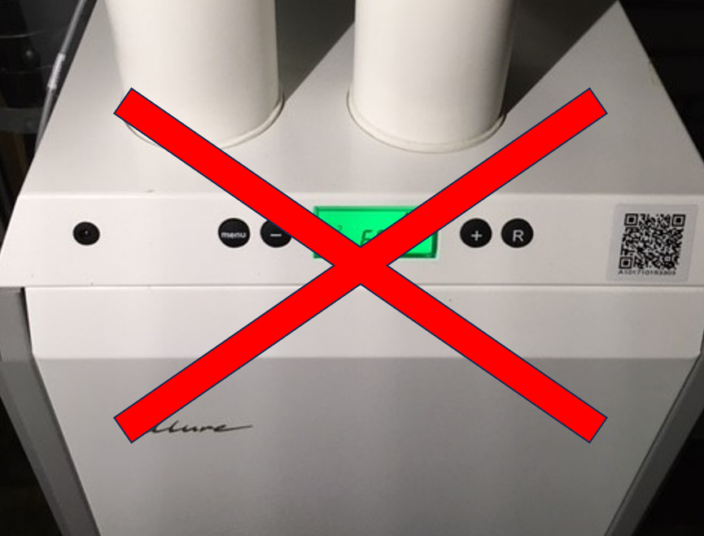

30 May, 2024
zijn echt duurzame oplossingen, waarbij volledig van het gas af gaat. Het zijn zogenaamde full electric oplossingen.
Deze oplossingen leiden tot het laagste energieverbruik, de laagste operationele kosten en het vastrecht van het gas vervalt.

zijn zogenaamde hybride oplossingen, hierbij gaat u wel minder gas gebruiken maar niet volledig van het gas af.
Bij de hybride oplossing wordt het grootste deel van de tijd elektrisch verwarmd (met een warmtepomp die een hoog rendement heeft) en alleen in de zeer koude perioden wordt er extra bijverwarmd met gas.
Eigenlijk raden wij deze oplossingen niet aan. Het zijn halve oplossingen, waar u de komende 15 jaar aan vast zit en de prijs is bijna gelijk aan een volledige oplossing.
bestaat uit een gewone airco. Dit is een ideale oplossing als uw huidige ketel plots kapot gaat en u wilt rustig de tijd nemen om te beslissen over de juiste vervanging of eventuele nieuwe ontwikkelingen afwachten. De bestaande luchtkanalen kunnen nog steeds gebruikt worden voor ventilatie en natuurlijke koeling, met een beetje geluk zelfs om andere ruimten te verwarmen. Bij deze oplossing is het te overwegen om de ventilatie te voorzien van een WarmteTerugWin (WTW) installatie.
bestaat uit het vervangen van de luchtverwarming door een compleet andere verwarming, bijvoorbeeld vloerverwarming. (Besef overigens dat u waarschijnlijk al vloerverwarming had). Deze oplossing is qua prijs vergelijkbaar met de oplossingen 1 en 2 en met name geschikt als u toch een nieuwe vloer wilde hebben. Ook hier kunt u de bestaande kanalen gebruiken voor ventilatie.
En ten slotte, maar ook dat is een beetje zonde, kunt U de ketel vervangen door een nieuwe Brink Alure of Brink Elan, want ze zijn nog steeds te koop en kunt er weer 15 jaar tegen.
EnergieCafe Mook en Middelaar.